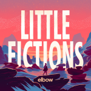

Elbow Little Fictions
(Concord Records)
By this point, Elbow feels like an English institution. The band has played charming, heartening music for decades and has a dedicated fanbase. When you're around for such a long time, you need to find ways to keep your sound fresh. On Little Fictions, the band continues its gradual evolution with some success but also some noticeable missteps.
Let's start with the positives. Throughout their career, Elbow became known for its sweeping epics, particularly on The Seldom Seen Kid. It would be easy for the band to continue to write mountainous, stadium-filling songs. But starting with The Take Off and Landing of Everything, the group moved towards more subtle sounds, still creating a lift but without becoming rote.
That transformation continues on Magnificent (She Says), a marvelous mix of synths and Hallé Orchestra strings. The electronics pop in and out, like light filtering through leaves on a tree. As usual, Guy Garvey's voice is a grounding, powerful presence, able to move through octaves effortlessly. In uncertain times, an inspiring song about showing a child the wonders of the world is sorely needed. It's an instant classic. Elsewhere, the guitar on All Disco rings out like a lost Christmas melody. It's a lovely, low-key number where you can close your eyes and let your mind wander. The addition of the Halle choir gives the song a light-hearted kick.
Little Fictions is Elbow's first album without drummer Richard Jupp. But rather than constraining their sound, the other members expanded the rhythms beyond a traditional drumkit. Gentle Storm combines a danceable but oddly-patterned beat with a vibrating organ. It wouldn't be out of place on an 80s Peter Gabriel album. While the verses are poetic, the chorus strips back to a simple sentiment. "Fall in love with me, everyday," Garvey sings, his yearning pouring out of every syllable. Trust The Sun is very similar, with funky, ear-catching percussion and a soothing piano line.
Moving towards a low-key sound is not always the best strategy. A few songs here fail to achieve liftoff. Head for Supplies has gorgeous, descriptive lyrics that only Garvey can write, such as "The way you read me like you wrote this book/And chapters along it’s still in your eyes." But the guitar is so airy that it might as well fade to nothing. Firebrand & Angel wastes a soulful piano vibe that sounds like it came right out of Fiona Apple's Criminal. K2 and Montparnasse are two of the dullest, phoned-in songs this band has ever delivered.
But Elbow redeems this album's shortcomings with the magical title track. The vibrant song builds beautifully and ends in a melody that will leave you awestruck. It manages a lift for the chorus by reducing the multi-rhythmic percussion to a simple beat, crashing piano chords and Garvey's voice. And when it seems like the track will fade away, it bursts back with a killer rhythm and warped, spacey, thunderous strings. Over it all, Garvey belts out in a way we haven't heard since The Birds. "Love is the original miracle," he sings, and you know he means every word. It's impossible to hear this song and not feel something. Kindling closes with a gentle comedown, as warm and comforting as its title.
Little Fictions is Elbow's weakest album since their second LP, Cast of Thousands. Despite the flaws, several tracks stand out among their strongest work. Finding a way to change your sound can be like walking in a swamp. It's tough to tell if your next footstep will land on solid ground. While Elbow may appear slightly off-balance after this record, their history shows us that every stumble is a new opportunity.
13 February, 2017 - 04:35 — Joe Marvilli